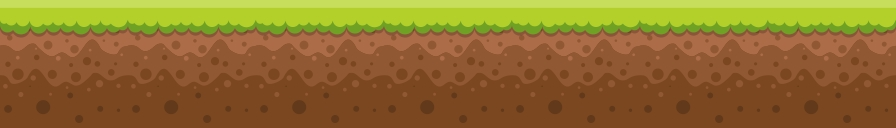
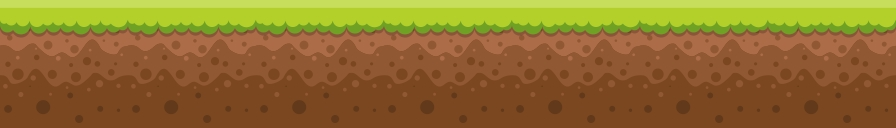

Era uma vez um pequeno cavaleiro que recebeu uma carta de um amigo.
Ele ficou muito muito muito surpreso, pois esse amigo tinha sumido a anos.
Só que as notícias na carta não eram muito boas. O seu amigo tinha contraido uma doença misteriosa e precisava de ajuda para pegar a cura.
O mais rápido que pôde ele foi ao encontro desse amigo.
Na carta o amigo falou que estava na caverna perto da cidade onde achava que a cura estava.
Ao chegar lá o cavaleiro notou que estranhamente a caverna tinha uma porta metálica e que estava trancada.
Procurando pistas ele notou uma placa perto da porta.
Ao entrar na caverna o cavaleiro se encontrou em uma sala com duas portas.
A porta da esquerda parece ser um armaze. A sala da direita está trancada com um teclado a o lado pedindo uma senha.
No armazem o cavaleiro encontrou várias caixas.
"Talvez eu encontre alguma coisa útil no meio dessa bagunça" ele pensou.
Finalmente o pequeno cavaleiro encontra o seu amigo.
Mas ele está diferente, parece que não que se aproximar do cavaleiro.
"Não se aproxime!" o seu amigo grita.
"Eu preciso do antidoto que está no armazem. Não sei quanto tempo mais vou resistir sem o antidoto."
O pequeno cavaleiro retorno com seu amigo para botar o papo em dia.